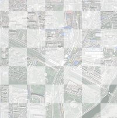
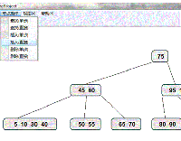
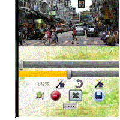

Correspondence: Department of computer science, North Carolina State University
Raleigh, NC
Zipcode: 27609
E-mail: jchen37@ncsu.edu
URL: www.chenjianfeng.net
About Me Research Interest Education Project List Publications Certifications Membership
ABOUT ME
I am a senior student at the software college in Shandong University,China, majoring in software engineering. Now I am applying for the graduate program for further study in the area of computer science.
My CV
RESEARCH INTEREST
- Computer Aided Geometric Design: Freeform surface re-parameterization, Ricci Flow, G1 continuous on NURBS surfaces
- Computer Graphics and Data Visualization: Multi-resolution methods, Forensic data analysis
- Data Mining and Data Analysis: Frequent pattern mining
EDUCATION
B.E. in Software Engineering 09/2010-06/2014(expected)
Shandong University, Jinan, China
Average: 89.27 (Total,top 7%), 90.78(Major)
GPA: 3.74(Total), 3.8(Major)
Course Profile
PROJECT LIST
 | Equiareal parameterizations of NURBS surfaces |
 | General rational bilinear transformation of NURBS surfaces |
|  | InnoTraffic-Intelligent navigation system |
 | Electronic trading system with Hadoop storage |
 | Music information retrieval system via humming |
 | An improved k-means clustering algorithm and its application |
Research on parallel computing platform-CUDA |
|
|  | Research on the query and update efficiency of B-Tree structure |
 | The compiler for PL0/1 Language |
|  | A smart camera with cloud storage for android |
 | Digital system experiment |
{kind=link}
{kind=link}
{kind=link}
{kind=link}
PUBLICATIONS
Equiareal parameterizations of NURBS surfaces
Sci- Graphic Models, accepted, 2013
The equiareality of freeform surfaces greatly affects the results of visualization and tessellation applications, especially when dealing with extruding and intruding shapes. To improve the equiareality of given freeform surfaces, we present an optimization algorithm using the Mobius transformations in the paper.An Interest-based Social Networking Content Recommendation Method
CSCD- Journal of Mathematics in Practice and Theory, accepted ,2013
Effective content recommendation provide users with convenient and accurate access to contents of their interest, which is a significant approach to develop social network. This paper represents an interest-based Recommendation method (IRM) relating to social network. It collects user interest in order to build a user-interest-content model then presents an interest-based content recommendation sequence algorithm and verifies it.Optimizing conformity of NURBS surfaces using general bilinear transformations
Writing now
The conformity of NURBS surfaces greatly affects rendering and tessellation results. To improve the conformity of NURBS surfaces, an optimization algorithm using general bilinear transformations is presented in this paper. This paper was inspired by the first paper (Equiareal parameterizations of NURBS surfaces), and we use a more general bilinear transformations to re-parameterize the surfaces, rather than merely use the limited Mobius transformations.Intelligent Navigation System basing Data Mining and Real-time Traffic
Paper won the first prize for the science creation competition, Shandong University, 2012
Without taking the real-time traffic situation into consideration, the typical navigation system merely receive the system users’ requirement and return them a shortest path, which is obviously limited. In this paper, we represent a totally model to build a much more effective navigation system. This model begins with collect the real-time traffic situation from four-dimensional source, analyzes the traffic data by a cellular automata, and then generate an optimal path to the user. This paper is one of the interim results for the university innovation project.
CERTIFICATIONS
- IBM DB2 Academic Certificate
- IBM XML Certificate
- IBM Websphere Certificate
- Software College training center (SDU) Certificate
MEMBERSHIP
- Student Union
- Bchine Student Innovation Lab
- Research Center of Human-Computer Interaction & Virtual Reality[link(Chinese)]
- Cycling Association of Shandong University (CASDU)
- Mathematical Modeling Club of Shandong University
- Robot Fish Interest Group